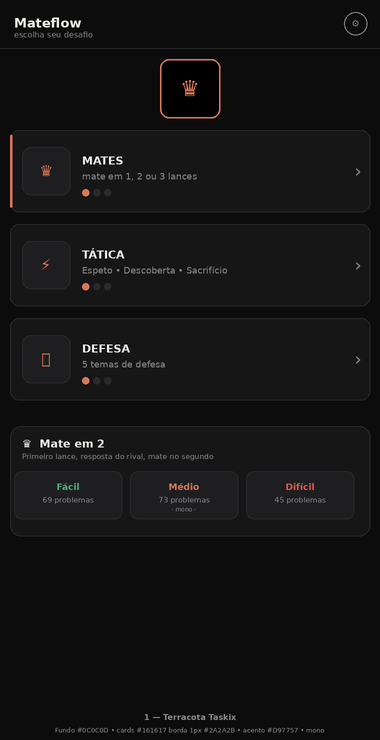
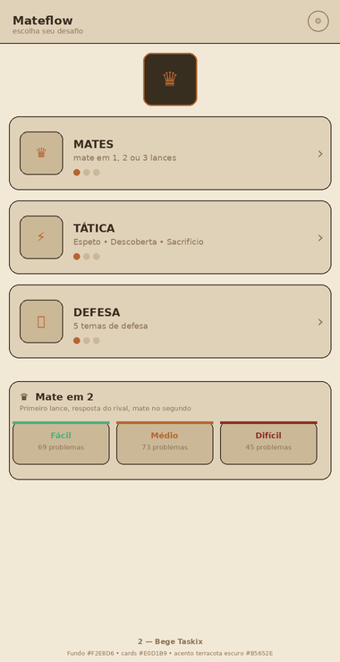
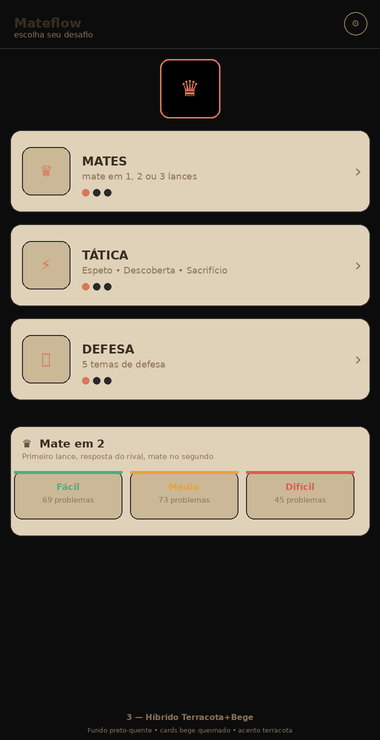
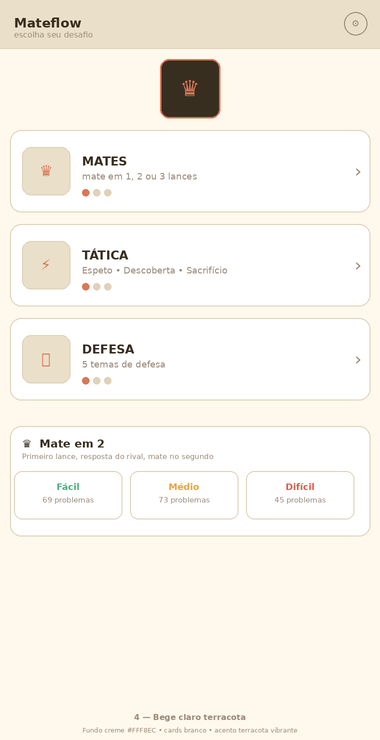
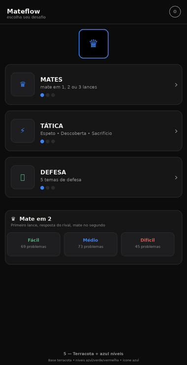
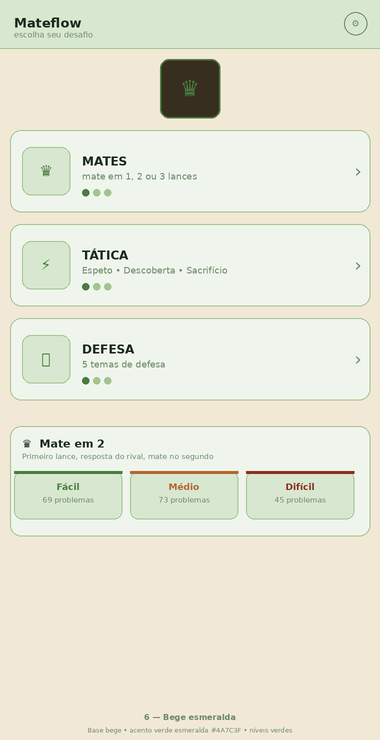
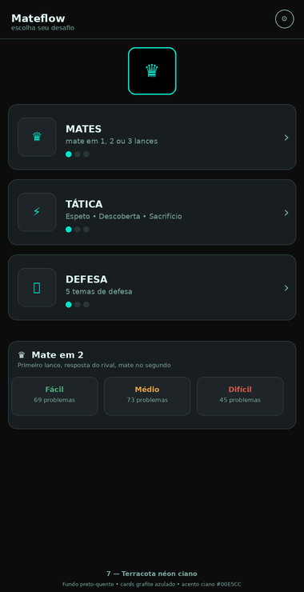
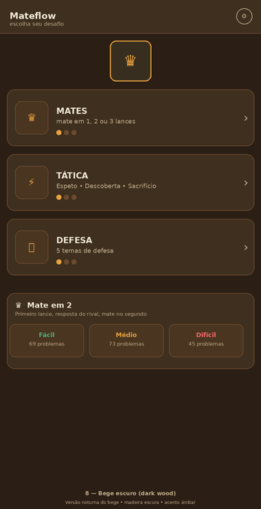
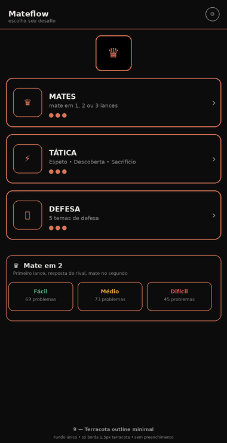
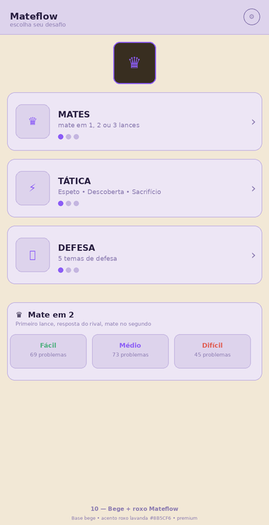

Inspirado no Terracota #D97757 e no Bege #F2E8D6/#E0D1B9 do Taskix — nítidas 2× (760→380)
SÓ navegação: botões Mate / Tática / Defesa + cards de níveis — nada no tabuleiro.

Fundo #0C0C0D, cards #161617 borda 1px #2A2A2B, acento #D97757, fonte mono. Igual ao tema Terracota do Taskix.

Fundo #F2E8D6, cards #E0D1B9, acento #B5652E. Igual ao Bege do Taskix — claro, papel.

Fundo preto-quente #0C0C0D + cards bege queimado. Contraste quente.

Fundo creme #FFF8EC, cards branco, acento terracota vibrante.

Base terracota + níveis azul/verde/vermelho. Mantém identidade mas diferencia níveis.

Base bege + acento verde esmeralda #4A7C3F. Remete a tabuleiro clássico.

Fundo preto-quente + grafite azulado + acento ciano #00E5CC. Futurista.

Versão noturna do bege — madeira escura #2B1E14 + âmbar #E8A33D.

Só borda 1.5px terracota sobre fundo preto. Minimal, sem preenchimento.

Base bege + roxo lavanda #8B5CF6. Premium.